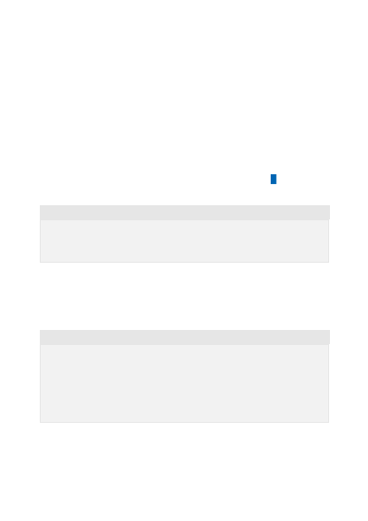

To trigger a response from the model, you should end with a user message indicating
that it's the assistant's turn to respond. You can also include a series of example
messages between the user and the assistant as a way to do few shot learning.
The following section shows examples of different styles of prompts that you could use
with the ChatGPT and GPT-4 models. These examples are just a starting point, and you
can experiment with different prompts to customize the behavior for your own use
cases.
If you want the ChatGPT model to behave similarly to chat.openai.com , you can use a
basic system message like "Assistant is a large language model trained by OpenAI."
For some scenarios, you may want to give additional instructions to the model to define
guardrails for what the model is able to do.
You can also include relevant data or information in the system message to give the
model extra context for the conversation. If you only need to include a small amount of
information, you can hard code it in the system message. If you have a large amount of
Message prompt examples
Basic example
{"role": "system", "content": "Assistant is a large language model trained
by OpenAI."},
{"role": "user", "content": "Who were the founders of Microsoft?"}
Example with instructions
{"role": "system", "content": "Assistant is an intelligent chatbot designed
to help users answer their tax related questions.
Instructions:
- Only answer questions related to taxes.
- If you're unsure of an answer, you can say "I don't know" or "I'm not
sure" and recommend users go to the IRS website for more information. "},
{"role": "user", "content": "When are my taxes due?"}
Using data for grounding